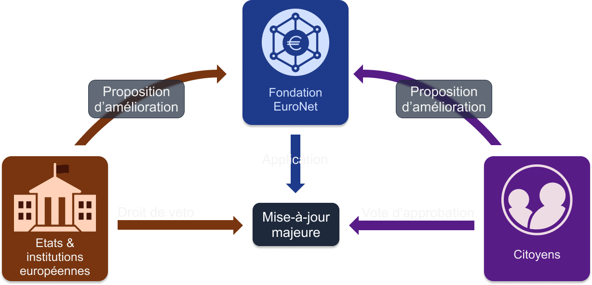
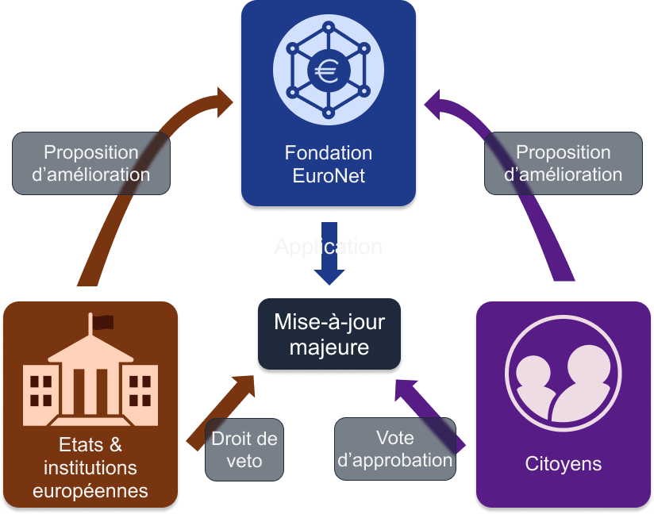

Une solution européenne, souveraine, visant à créer de la confiance entre les citoyens, les institutions publiques, les entreprises et les ONGs par le biais d'informations sûres, inaltérables, et accessibles à tous.
Vous voulez contrôler par vous-même l'usage de l'argent public ?
Accédez en temps réel aux finances publiques et menez l’enquête.
Vous avez envie de contribuer à la vie démocratique ?
Venez participer activement à la vie démocratique sur votre espace citoyen et exprimez-vous sur des sujets de société.
Assez des démarches interminables ?
Simplifiez vous la vie en utilisant une plateforme interactive unique pour toutes vos démarches administratives.
Encombrés par vos pièces d'identité ?
Possédez vos pièces d’identité et certificats sous format dématérialisé.
Virements trop lents ? Paiements par carte refusés en dessous de 5€ ?
Effectuez des transactions instantanées sans frais, 24h/24 7/7j dès 0,01€ partout en Europe.
Trop de titres de transport différents ?
Achetez vos e-tickets et e-billets sur une application unique et voyagez en toute facilité partout en Europe.
Vous voulez lutter contre la défiance grandissante envers les institutions et prouver le bon usage de l'argent public ?
Utilisez les services d'EuroNet pour assurer une transparence en temps réel des comptes publics (hors secteurs secret défense), permettant à tous de connaître l'utilisation de l'argent public et renforçant la confiance dans les institutions publiques.
Vous souhaitez améliorer l'accessibilité et l'expérience utilisateur des services publics ?
Déployez vos services sur une plateforme interactive web3 (un web décentralisé qui permet aux utilisateurs de contrôler leurs propres données) pour regrouper les services publics et faciliter leur accès par les citoyens.
Vous souhaitez renforcer la démocratie au sein de votre institution ?
Utilisez la plateforme "Agora" pour faciliter l'émergence de propositions citoyennes, de consultations citoyennes et de votes électroniques tout en garantissant l'anonymat des votes.
La contrefaçon est un problème qui impacte votre entreprise, nuit à votre image de marque ou met en danger vos clients ?
Euronet offre une solution de traçabilité de produits, vérifiable par tous, permettant de retracer un produit sur tout son cycle de vie afin de protéger votre entreprise et vos clients.
Vous êtes commerçant, soumis à des frais sur chaque transaction et ne prenez pas la carte en dessous d'un certain montant?
EuroNet propose une solution de paiement et de facturation avantageuse sans frais de transactions. Recevez instantanément le paiement de vos clients dès 0,01€ sans frais intermédiaires.
Besoin d'une infrastructure robuste pour gérer l'authenticité de certificats ?
EuroNet offre une solution pour gérer et vérifier l'authenticité de documents et en particulier en vue de la protection de la propriété intellectuelle.
Vous avez besoin d'automatiser des transferts monétaires avec vos clients et fournisseurs ?
EuroNet propose une infrastructure sécurisée permettant la programmabilité de transferts monétaires sans passer par des intermédiaires.
Vous êtes un organisme qui permet à vos donateurs de bénéficier de défiscalisation ?
Soyez totalement transparent et permettez l'accès en temps réel aux finances de votre organisme afin d'assurer aux donateurs que l'argent est utilisé à bon escient.
Besoin d'une infrastructure logicielle pour gérer facilement la trésorie d'un organisme à but non lucratif ?
Bénéficiez de la solution de paiement et de facturation d'EuroNet, totalement gratuite pour les organismes à but non lucratif.
Besoin de prouver facilement les accréditations d'un organisme ?
L'infrastructure d'EuroNet permet de gérer des certificats, des accréditations ou des labels et de prouver facilement leurs authenticités.
68%[1]
des citoyens de l'Union Européenne pensent que la corruption est largement répandue dans les institutions publiques.
Selon l’indicateur "Trust in government" de l’OCDE, en moyenne moins de
50%[2]
des citoyens de l’UE ont confiance en leur gouvernement.
La perte de confiance et la défiance envers les institutions publiques constituent
une importante menace pour notre système démocratique. Plusieurs axes d’amélioration pour réinstaurer la confiance dans les institutions sont proposés par le rapport de l’OCDE
"Trust Survey Report"[3]
publié en Juillet 2022 :
C’est dans ce contexte qu’est né le projet EuroNet, une réponse technique aux problèmes exposés ci-dessus. Les objectifs sont :
Le réseau EuroNet sera construit en utilisant la technologie blockchain. C'est une technologie novatrice avec de hauts standards de sécurité, de transparence et de résilience. La blockchain permet la construction d'un réseau informatique pour le stockage et la transmission d’informations sous forme de transactions dans un registre ineffaçable et consultable par tous. La blockchain est constituée de serveurs informatiques, appelés nœuds, qui stockent et valident les informations sur le réseau. Ces noeuds possèdent leur propre registre et sont répartis dans différents lieux (réseau distribué) et hébergés par différents acteurs (dans notre cas, des institutions publiques, des entreprises et des citoyens).
La blockchain est conçue pour incarner la confiance dans l'espace numérique. C'est la raison pour laquelle le projet EuroNet se construit avec cette technologie tout en excluant les aspects spéculatifs et énergivores qui lui sont souvent associés.
La blockchain peut être vue comme un livre de compte partagé, accessible à tous, dans lequel il est impossible d'effacer une information. Afin d'empêcher une modification frauduleuse des informations, les noeuds seront pour la moitié détenus, par des institutions publiques et des acteurs privés, dans des lieux hautement sécurisés et pour l'autre moitié, détenus par des citoyens anonymes, dans des lieux inconnus.
Cette répartition des noeuds permet ainsi de se prémunir contre :
Ainsi, en assurant l'intégrité du réseau, tous les acteurs se protègent mutuellement et renforcent la coopération et la solidarité européenne. Les informations sur la blockchain sont donc inaltérables, consolidant de fait la confiance que l'on peut avoir en ces données.
Afin de garantir que le système est en totale conformité avec les fonctionnalités présentées au grand public, le code source du système sera en accès libre (open source), visant à empêcher l'ajout de fonctionnalités contraires à l'intérêt général. Par ailleurs, le caractère open source offre un avantage considérable, en suscitant l'engagement des communautés technologiques pour améliorer en permanence la solidité du code source.
La consultation d’informations sur EuroNet est ouverte à tous et ne nécessite qu'une connection à internet pour aller consulter les registres.
Pour bénéficier des services personnalisés proposés par le déploiement d'EuroNet, les utilisateurs devront créer un compte. Ils pourront dès lors, accèder aux services via une application pour Smartphone, une plateforme web ou une extension web.
La blockchain sera entretenue par la fondation EuroNet. Son mandat sera les mises à jour logiciel de la blockchain ainsi que le bon fonctionnement et l’entretien des noeuds.
Le réseau sera cogéré par les citoyens et les institutions publiques. Les utilisateurs pourront soumettre des propositions d’amélioration. Les institutions publiques pourront utiliser de concert un droit de véto s'ils considèrent que la sécurité du réseau est impactée. Lors d’une mise-à-jour majeure (Hard-Fork), une assemblée citoyenne représentative de la population votera pour approuver les changements apportés par la mise-à-jour. Ce vote devra impérativement être précédé de rapports sur le réseau de test (testnet), d’audits rendus publics et d'accompagnements d'experts afin d’éclairer au mieux les choix des citoyens. En cas de désapprobation, la mise à jour ne pourra pas se faire.
 
Afin de lutter contre le blanchissement d'argent et le financement du terrorisme (norme LCB-FT), un compte Euronet pourra être gelé sur une décision de
justice dont la preuve devra être fournie sur la blockchain. Ce processus
impliquerera des citoyens en tant que jurés pour éviter des dérives
autoritaires.
EuroNet se veut être une solution souveraine : il est donc exclu de développer une infrastructure sur un réseau sécurisé par des intérêts financiers privés et dont la sécurité varie avec le cours de l'actif sous-jacent. Il est prévu, cependant, de pouvoir connecter le réseau EuroNet avec d'autres blockchains.
Les transactions effectuées par des particuliers seront cryptées afin de protéger la vie privée. Seul l'identifiant de la transaction sera visible. Le montant, l'emetteur et le destinataire seront cryptés. De même, les transactions des entreprises seront également cryptées pour protéger le secret professionel.